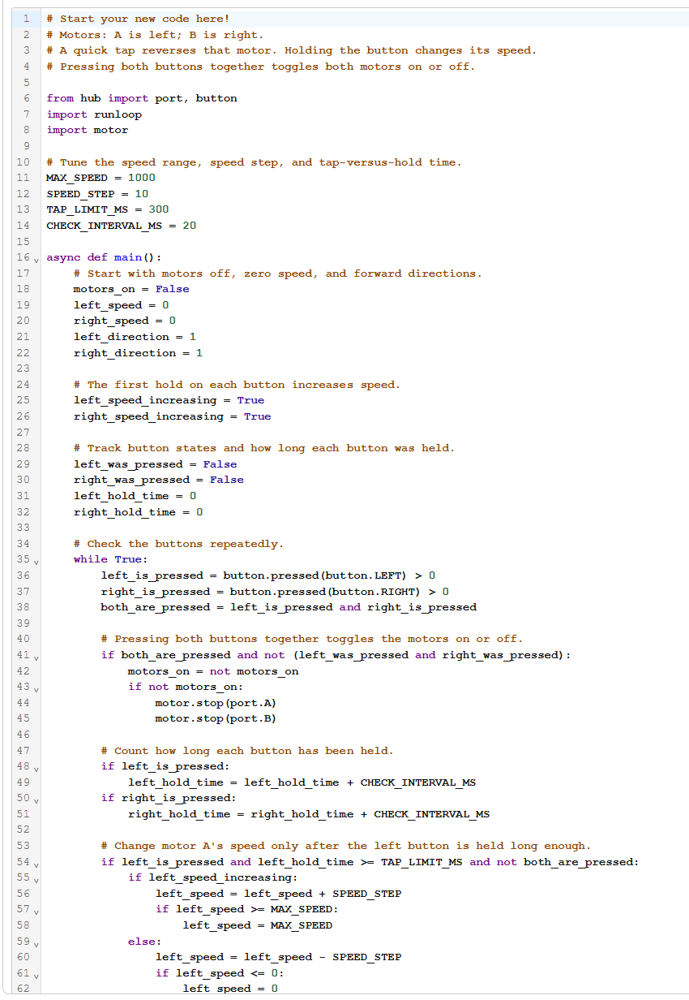
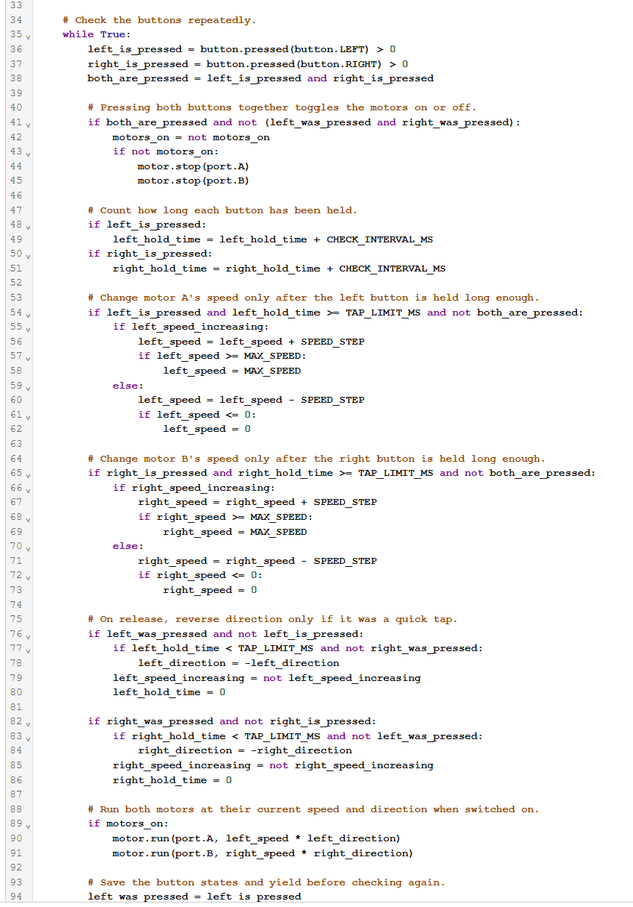

I was assigned the left and right Hub buttons, with the goal of turning the motors on and off, changing their speed, and switching directions. To turn on the motors, both buttons must be pressed. To speed up or slow down a motor, its corresponding button must be held down. To change a motor's direction, its corresponding button must be clicked.
The code shown is my fourth adaptation. The first adaptation made it functional. In the second, once the speed reached its maximum, it decreased until it reached the minimum and oscillated between the two. The third changed the speed function so each hold would either increase or decrease speed, with that behavior switching on the next hold. My final adaptation changed the code so holding a button would not also switch the motor's direction.